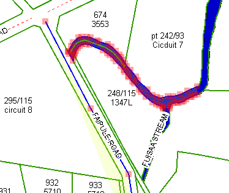
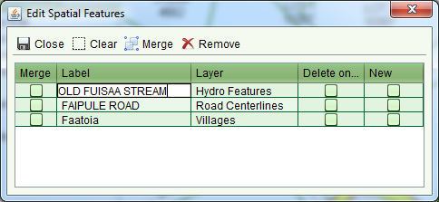

Change a Road Name, Village Name or a Hydro Parcel Name
The steps described here can be used for both the Record Plan and Change Map services,
however it is more likely that a name change will be the result of standard maintenance. In
this case, use the Change Map service as this does not require a plan to accompany the
service.
Steps
-
-
Start the Change Map service to open the Change Map form. Use the Map Viewer to locate
the village, road and/or hydro parcels that require name changes and select them using
the
 Select Spatial Feature tool. This
will highlight the feature with a dark blue boarder and light yellow fill. The node
points of the features will be highlighted with light red squares.
Select Spatial Feature tool. This
will highlight the feature with a dark blue boarder and light yellow fill. The node
points of the features will be highlighted with light red squares.

Spatial Feature Selection
-
-
To change the name of the selected spatial features, use theEdit Spatial Feature Details tool to update the
label assigned to the feature.

Edit Spatial Features screen
-
-
The new name for the feature will not display on the map until the application is
approved so the final steps are to complete the service and approve the application.